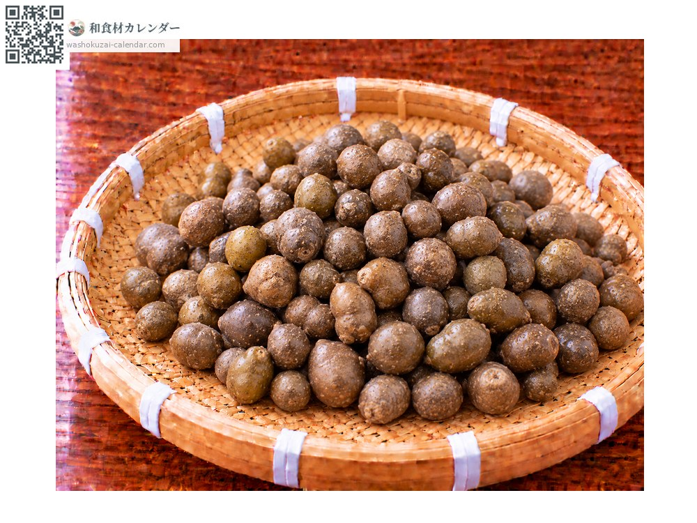
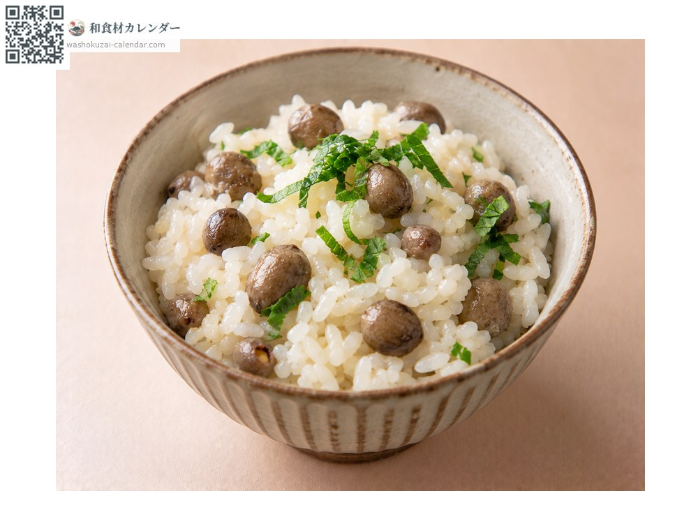
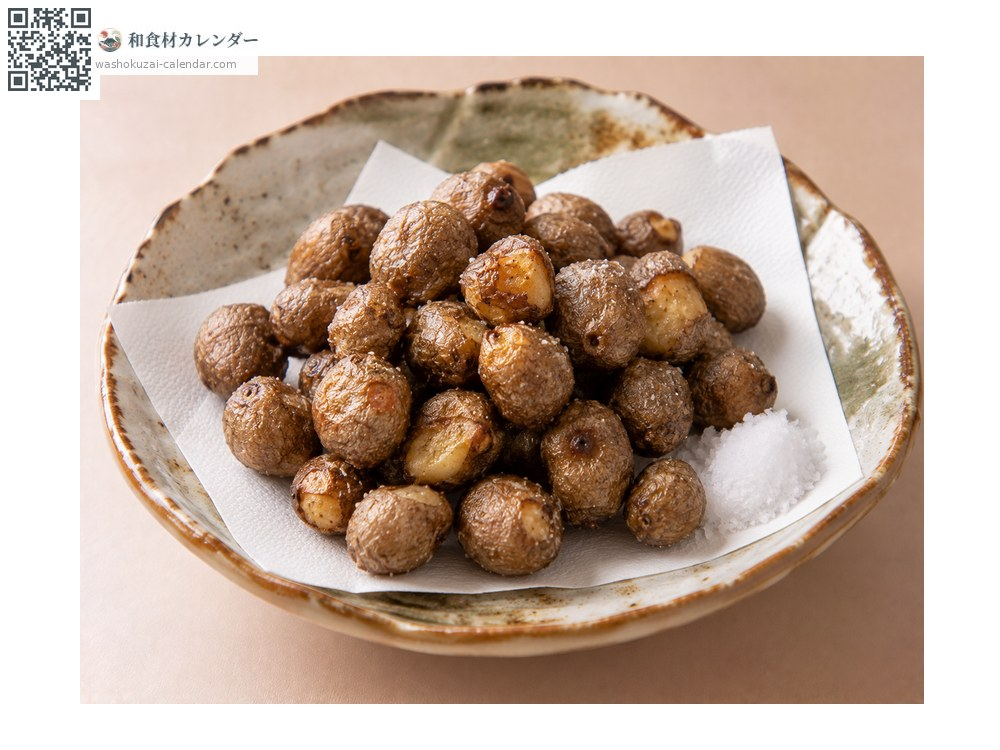
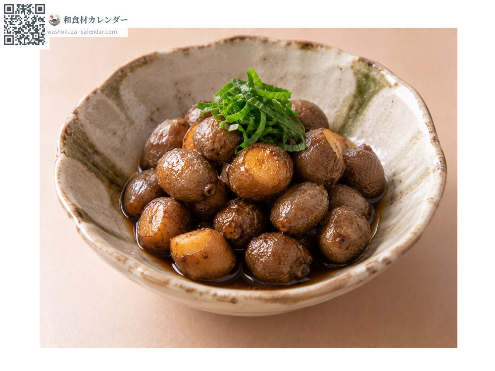
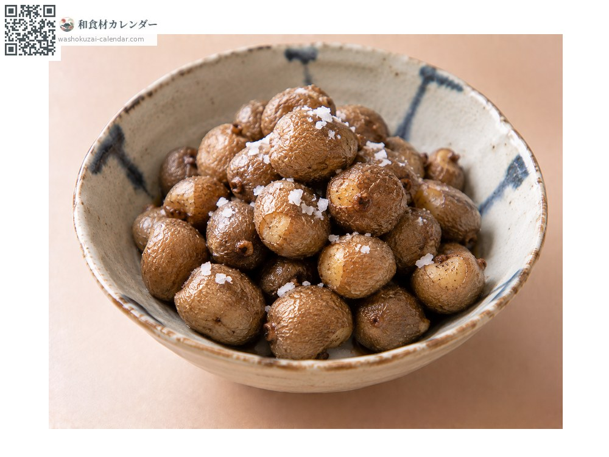

蔬菜
零餘子（山藥豆）
むかご むかご mukago
別名mukago
當令時期為10月、11月

當令時期
1月
2月
3月
4月
5月
6月
7月
8月
9月
10月
11月
12月
當令有供應
料理方式

零餘子飯
與米同煮，口感鬆軟並帶有山藥的香氣。

素炸
油炸後撒鹽，會變得香酥。

炒煮
先炒再甜鹹燉煮，是下酒的好菜。

水煮
用鹽水煮熟直接吃，風味質樸。
挑選方式
顆粒整齊硬實、外皮有張力。沒有皺褶。
保存方式
放在陰涼暗處可放數天。要久放就煮過後冷凍。
主要產地
小知識
是長在山藥藤蔓葉腋處的小肉芽。掉到土裡會發芽，最終長成山藥。味道與香氣都與山藥如出一轍，只在秋天極短的期間出現。只能靠手工採集，因此流通量很少。